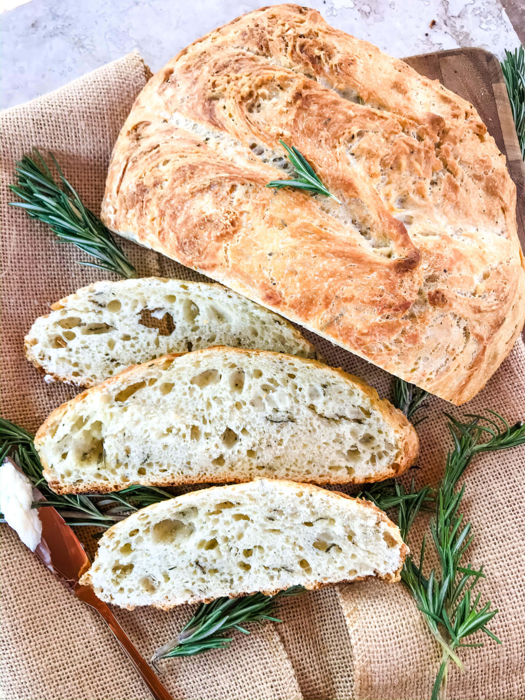

Introduction
My family loves this loaf of warm bread. It tastes just like a warm hug on a winters day (the secret ingredient is love).
It's a super simple recipe that can be used with most things you already have in your cupboards.
You own personal touch can be added with your choice of herbs, nuts, honey and even oats!

Ingredients
- 6 cups flour
- 1½ TBS yeast
- 1½ TBS salt
- 3 cups water (room temp)
- Extras of your choice!
Instructions
- Add yeast to water & let sit for 2 minutes.
- Add mixture to flour and mix until sticky.
- Cover and let rest for at least 5 hours, check & punch down dough halfway through.
- Flour the counter and hands, knead dough to a stiffer but still soft consistency.
- Cover pan in oil let dough rise in pan while oven preheats to 450°.
- Bake until golden and hollow sounding when you tap it.